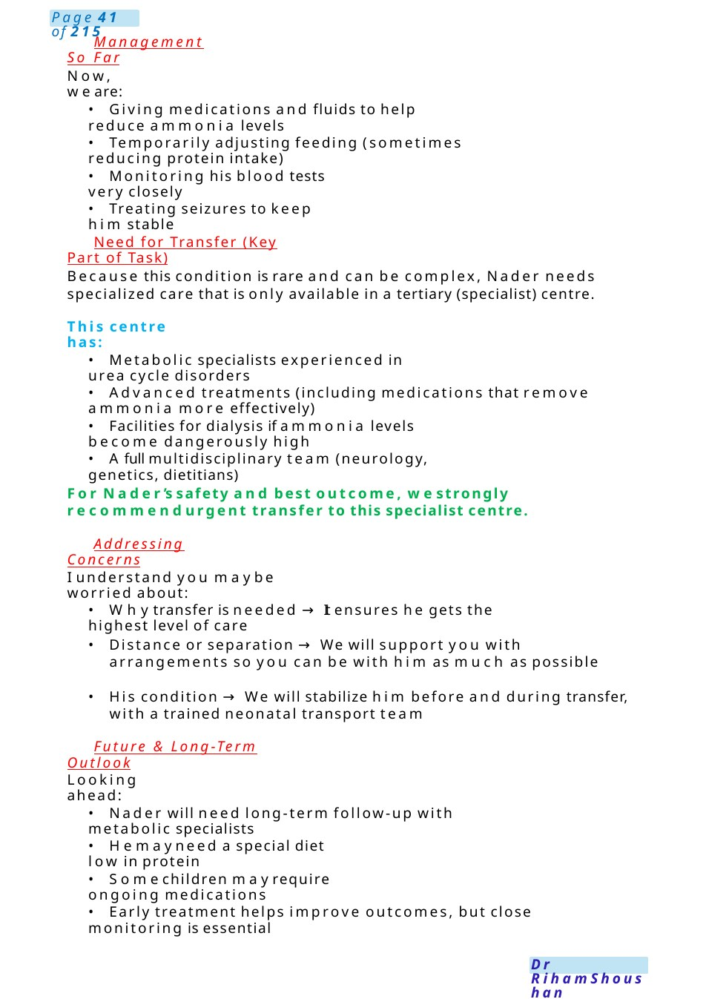
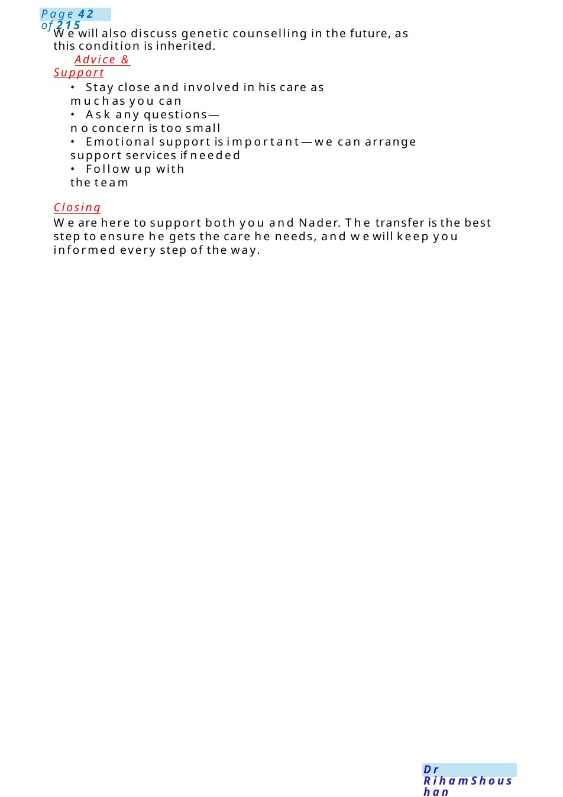
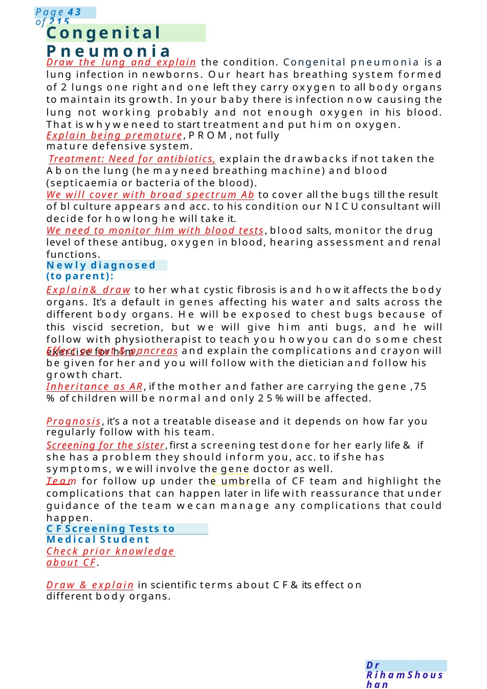

Urea Cycle Defect &Transfer to Tertiary Centre
Hello Miss Huda, I’m Dr. [Your Name], one of the doctors caring for Nader. I can see this has been a very worrying time for you, especially with him having seizures. I’d like to explain clearly what we have found, what it means, and what weplan to do next. Please feel free to stop meat any time. Explaining the Condition (Simple & Clear)
Scenario Summary
Hello Miss Huda, I’m Dr. [Your Name], one of the doctors caring for Nader. I can see this has been a very worrying time for you, especially with him having seizures. I’d like to explain clearly what we have found, what it means, and what weplan to do next. Please feel free to stop meat any time. Explaining the Condition (Simple & Clear)
Full Original Scenario

Urea Cycle Defect &Transfer to Tertiary Centre
Setting: Neonatal unit
Mother: Miss Huda
Baby: Nader, 1 week old
Introduction & Building Rapport
Hello Miss Huda, I’m Dr. [Your Name], one of the doctors caring for Nader. I can see this has been a very worrying time for you, especially with him having seizures. I’d like to explain clearly what we have found, what it means, and what weplan to do next. Please feel free to stop meat any time.
Explaining the Condition (Simple & Clear)
Fromthe tests we’ve done, wehave found that Nader has a condition called a urea cycle defect.
Normally, when the body breaks down protein from milk, it produces a waste product called ammonia.Ammonia is toxic, especially to the brain.
Thebody usually gets rid of ammoniathrough a process in the liver called the urea cycle, which turns ammonia into a safe substance that can be passed out in urine.
In Nader’s case, this process is not working properly due to an inherited condition. This leads to a build-up of ammonia in the blood, which can affect the brain and can cause symptoms like:
- Seizures
- Poor feeding
- Sleepiness or reduced responsiveness
Linking to Current Situation
The seizures Nader had are most likely due to this high ammonia level affecting his brain. This is whyweacted quickly to investigate the cause.
Reassurance with Honesty
I understand this is a lot to take in. This is a serious condition, but:
- Wehave identified the cause early
- Treatment has already been started to lower ammonia levels
- Nader is being closely monitored.

Management So Far
Now, we are:
- Giving medications and fluids to help reduce ammonia levels
- Temporarily adjusting feeding (sometimes reducing protein intake)
- Monitoring his blood tests very closely
- Treating seizures to keep him stable
Need for Transfer (Key Part of Task)
Because this condition is rare and can be complex, Nader needs specialized care that is only available in a tertiary (specialist) centre.
This centre has:
- Metabolic specialists experienced in urea cycle disorders
- Advanced treatments (including medications that remove ammonia more effectively)
- Facilities for dialysis if ammonia levels become dangerously high
- Afull multidisciplinary team (neurology, genetics, dietitians)
For Nader’s safety and best outcome, westrongly recommendurgent transfer to this specialist centre.
Addressing Concerns
I understand you maybe worried about:
- Whytransfer is needed →It ensures he gets the highest level of care
- Distance or separation →We will support you with arrangements so you can be with him as much as possible
- His condition →We will stabilize him before and during transfer, with a trained neonatal transport team
Future & Long-Term Outlook
Looking ahead:
- Nader will need long-term follow-up with metabolic specialists
- Hemayneed a special diet low in protein
- Somechildren mayrequire ongoing medications
- Early treatment helps improve outcomes, but close monitoring is essential

Wewill also discuss genetic counselling in the future, as this condition is inherited.
Advice & Support
- Stay close and involved in his care as muchas you can
- Ask any questions—noconcern is too small
- Emotional support is important—we can arrange support services if needed
- Follow up with the team
Closing
We are here to support both you and Nader. The transfer is the best step to ensure he gets the care he needs, and wewill keep you informed every step of the way.

Congenital Pneumonia
Newly diagnosed (to parent):
CFScreening Tests to Medical Student
Draw the lung and explain the condition. Congenital pneumonia is a lung infection in newborns. Our heart has breathing system formed of 2 lungs one right and one left they carry oxygen to all body organs to maintain its growth. In your baby there is infection now causing the lung not working probably and not enough oxygen in his blood. That is whyweneed to start treatment and put him on oxygen.
Explain being premature, PROM,not fully mature defensive system.
Treatment: Need for antibiotics, explain the drawbacks if not taken the Abon the lung (he mayneed breathing machine) and blood (septicaemia or bacteria of the blood).
We will cover with broad spectrum Ab to cover all the bugs till the result of bl culture appears and acc. to his condition our NICUconsultant will decide for howlong he will take it.
We need to monitor him with blood tests, blood salts, monitor the drug level of these antibug, oxygen in blood, hearing assessment and renal functions.
Explain& draw to her what cystic fibrosis is and howit affects the body organs. It’s a default in genes affecting his water and salts across the different body organs. He will be exposed to chest bugs because of this viscid secretion, but we will give him anti bugs, and he will follow with physiotherapist to teach you howyou can do some chest exercise for him.
Effect on gut & pancreas and explain the complications and crayon will be given for her and you will follow with the dietician and follow his growth chart.
Inheritance as AR, if the mother and father are carrying the gene ,75 %of children will be normal and only 25%will be affected.
Prognosis, it’s a not a treatable disease and it depends on how far you regularly follow with his team.
Screening for the sister, first a screening test done for her early life & if she has a problem they should inform you, acc. to if she has symptoms, wewill involve the gene doctor as well.
Team for follow up under the umbrella of CF team and highlight the complications that can happen later in life with reassurance that under guidance of the team wecan manage any complications that could happen.
Check prior knowledge about CF.
Draw & explain in scientific terms about CF&its effect on different body organs.